How To Setup Mumble
For Penny Arcade's Starcraft II Mumble Server
Contact exoplasm@exosquad.net to donate to the server!
Live Server View

Download Mumble
Head on over to http://mumble.sourceforge.net and download version 1.2.2 (or newer).
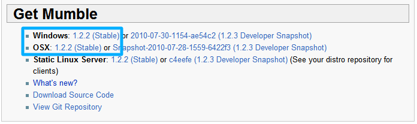{kind=link}
Install Mumble
Run the installer. You can press next all the way through without looking if you want. There really isn't anything that needs to be changed.
Start Mumble
Mumble should start automatically when it is done installing, but take note that there are two icons by default. You don't want to use the backwards-compatible version of Mumble when connecting to my server.
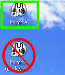{kind=link}
The first time you run mumble it will ask if you want to run the audio wizard. You should click yes unless you want everyone to hear you breathing heavily into your mic that picks up every sound from your speakers. Note that this will cause everyone to laugh at you for not knowing how to do voice chat properly.
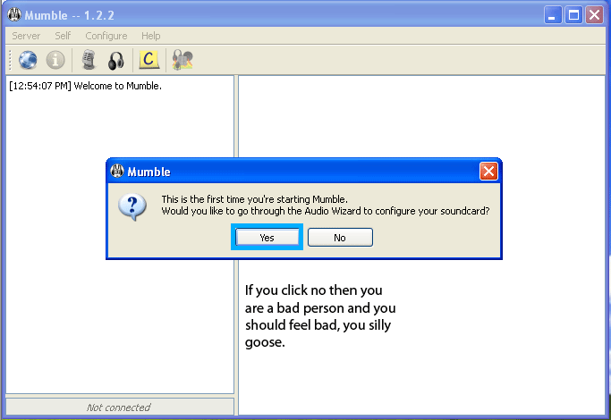{kind=link}
Audio Setup Wizard
Use the audio wizard to get your audio in/out just right. You can also enable Push To Talk if that's your thing.
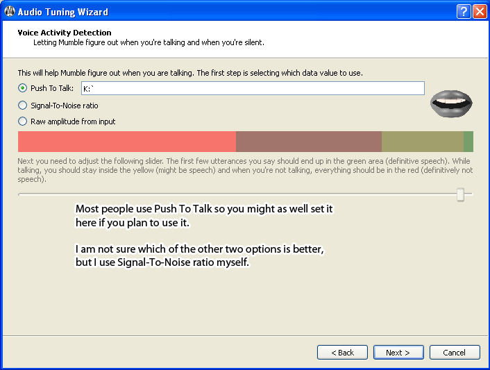{kind=link}
Certificate Management
Mumble uses secure connections which is good I guess. No one will be able to evesdrop on our amazing strategies or boring job stories. Go with the default of automatic creation because it's easy and works fine.
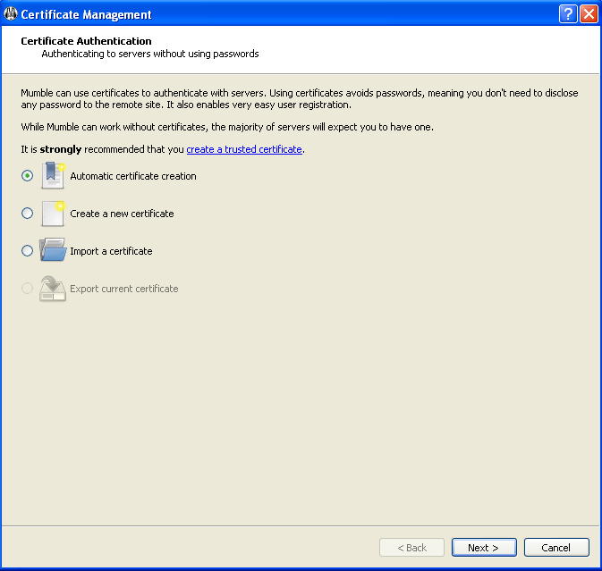{kind=link}
Connect to the server
Okay we are getting close to being done with this setup process. You're going to want to add a new server since mine isn't listed publicy. It will automatically show up under your favorite servers listing. Fill it out like the image below. Note that the server name can be anything you want. The username is obviously what you want people to see when you're in the server.
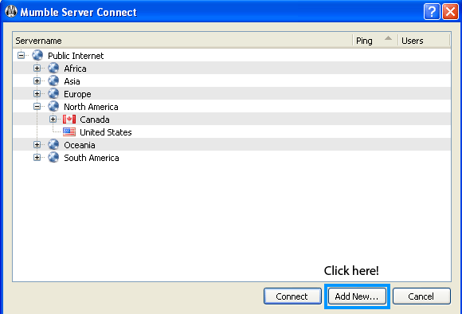 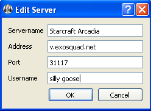 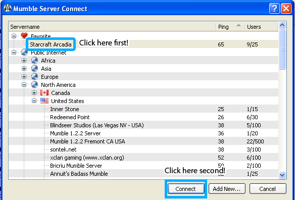{kind=link}
{kind=link}
{kind=link}
Almost Connected! Certificate warning!
There isn't a way for me to set up a "valid" certificate on this server, but that doesn't matter. A self-signed certificate is no less secure than one signed by a central authority. Unless you see this message again later on, there is little to no chance that the connection has been compromised. But we're not talking about high value financial details or anything, so it's not really a big deal anyway. Click yes to store the certificate and not be warned about it again (unless it changes, which it shouldn't).
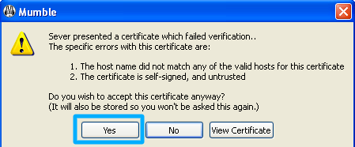{kind=link}
Password
You will get an error about having the wrong password for an unregistered user. Just type in the usual password (wang) and you're good to go. You don't have to register or anything like that and it won't bother you about it anymore.
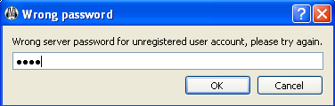{kind=link}
Main Window
Okay, so you are connected and everything is good to go! You can at this point stop reading and enjoy the voice chat, however if you follow on there are some more options to configure to get rid of some annoyances.
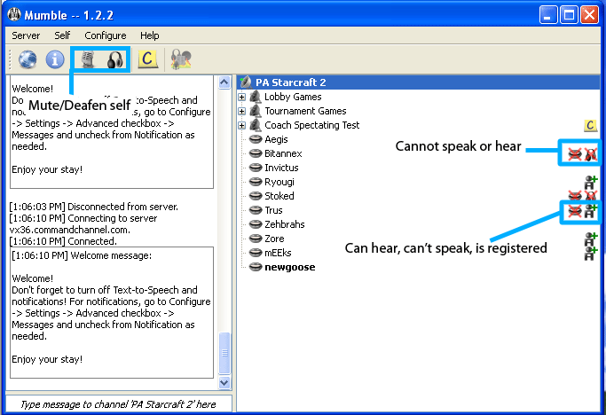{kind=link}
Configuration
Before configuring anything else, you should tick the "Advanced" checkbox to reveal more options. I really don't know why they don't have this on by default.
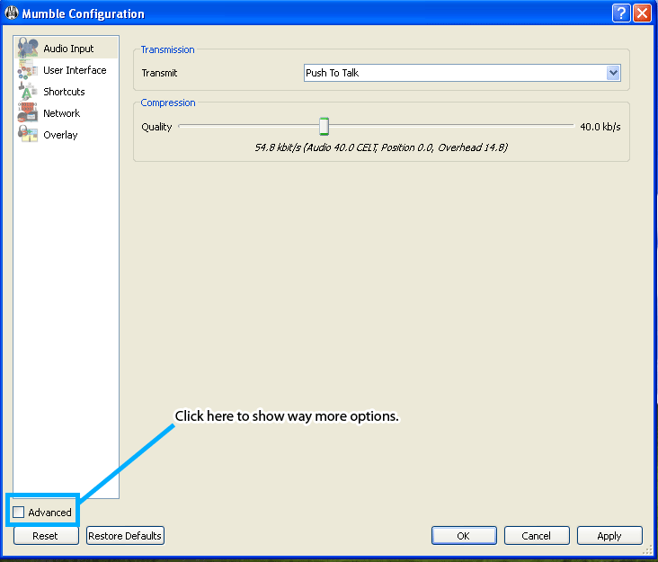{kind=link}
Messages Configuration
This is where you control what kind of messages or notifications you receive. You can toggle text-to-speech, audio files, balloon notification (not cool while in-game), and console. Console is what outputs to the "chat" part of the Mumble window. You should leave that on for text messages so you can read what people typed if the robot voice wasn't audible.
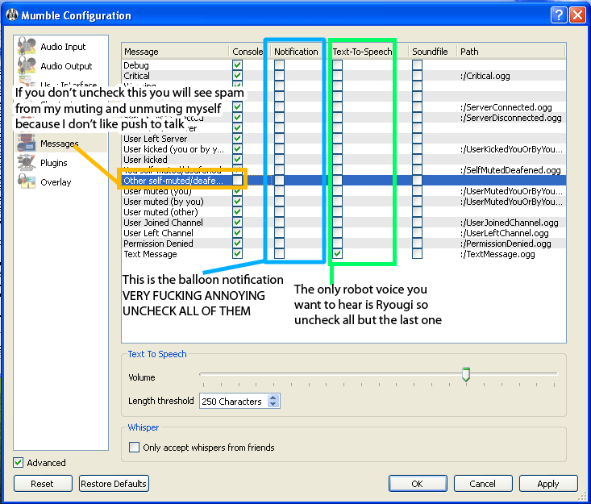{kind=link}
Hotkeys (Shortcuts)
This is where you can configure hotkeys to do various things. One important hotkey to set is the deafen yourself. We use this a lot for the players in a match so that they can't hear the spectators. The alternative is to alt-tab before/after your matches or let a non-lazy admin-type deafen you, the latter leaving you deaf until they remember that they did that.
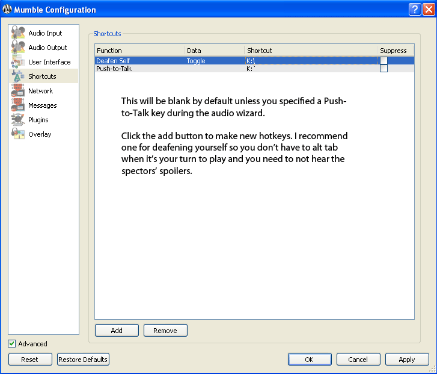{kind=link}
Overlay
This is the one that EVERYONE complains about as soon as they get in game. The overlay is a neat thingy that shows you who is talking while in-game. It shows their name and avatar (if they set one) on top of the game. By default it is jammed up in the top right corner which usually covers resource counters. It also shows everyone, regardless of their status, by default. You can use the sliders to adjust its position. Moving the right slider down just a tad works for me. Also make sure to set it to only show people who are talking, because you don't want a ginormous list of names covering up half your screen all the time.
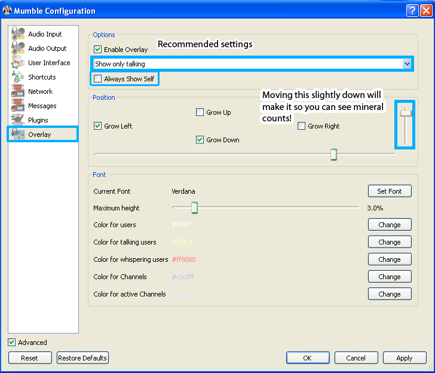{kind=link}
Back to top